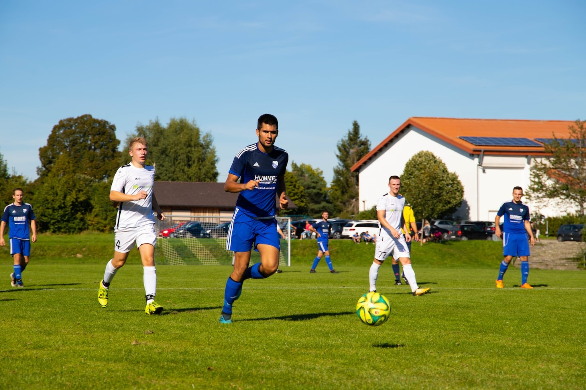
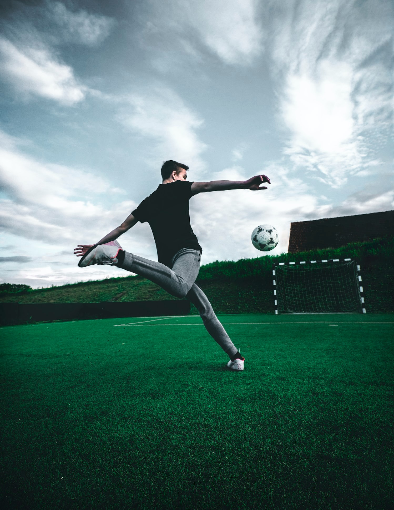
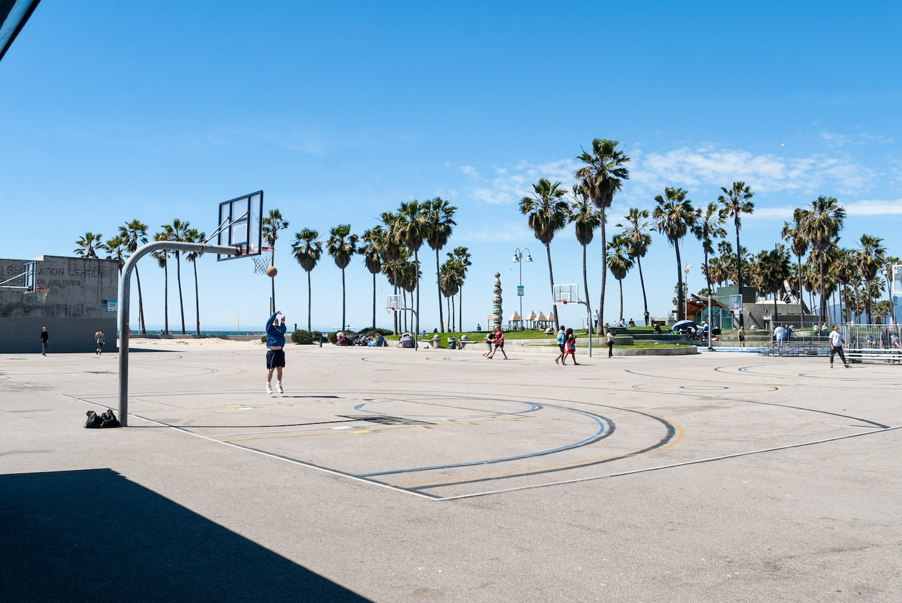
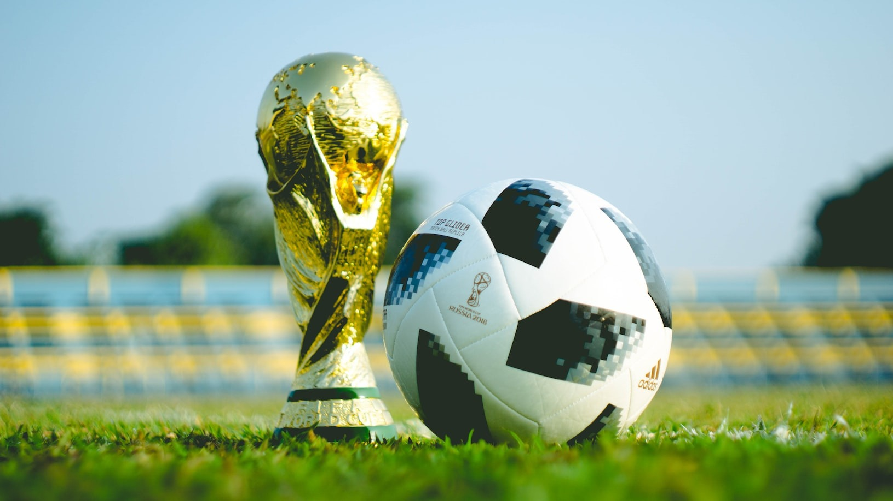

BERITA TERBARU

Dalam berita terkini seputar dunia sepak bola, tim papan atas sedang menunjukkan performa mengesankan mereka di berbagai kompetisi. Salah satu sorotan utama adalah pertandingan sengit antara dua rival berat yang berhasil mencuri perhatian para pecinta sepak bola di seluruh dunia. Pertandingan ini menjadi panggung bagi para pemain bintang untuk menampilkan keterampilan dan strategi terbaik mereka. Selain itu, transfer pemain juga menjadi topik hangat dalam dunia sepak bola, dengan beberapa klub besar yang aktif mengamankan tanda tangan pemain berkualitas tinggi untuk memperkuat skuat mereka.
SEDANG BANYAK DICARI

Pencetak gol utama dalam dunia sepak bola mencapai milestone spektakuler dengan memecahkan rekor baru...
Tangerang | 17 Oktober 2023
SEPUTAR BASKETBALL

Dalam arena bola basket, tim-tim unggulan terus menunjukkan dominasi mereka di berbagai kompetisi. Pertandingan terbaru menjadi saksi ketegangan di lapangan, dengan beberapa pemain bintang mengukir performa luar biasa. Pergantian pemain dan strategi cemerlang dari para pelatih juga menjadi faktor penentu dalam mengubah dinamika pertandingan. Sementara itu, sorotan juga tertuju pada prestasi atlet wanita dalam dunia basket, menegaskan kehadiran mereka sebagai kekuatan utama dalam olahraga ini. Dengan persiapan menuju turnamen besar mendatang, antusiasme penggemar terus meningkat, dan dunia basket terus menyajikan aksi-aksi menarik yang memukau para penonton.
Legenda Sepak Bola Umumkan Pensiun: Penghormatan Meriah untuk Karier Luar Biasa
Sebuah era dalam dunia sepak bola berakhir ketika seorang legenda resmi mengumumkan pensiun dari kariernya. Penghormatan meriah dari rekan-rekan seprofesinya, penggemar setia, dan komunitas sepak bola secara keseluruhan mengiringi pengumuman ini, mengakui kontribusi luar biasa sang pemain selama bertahun-tahun.
Kejutan di Puncak Klasemen: Tim Tak Terduga Geser Favorit Juara Bertahan
Tim yang tidak banyak diperhitungkan sebelumnya menciptakan kejutan besar dengan menggeser tim favorit juara bertahan dari puncak klasemen. Perubahan dramatis ini menciptakan persaingan yang semakin ketat dan menambah ketidakpastian di dalam liga.